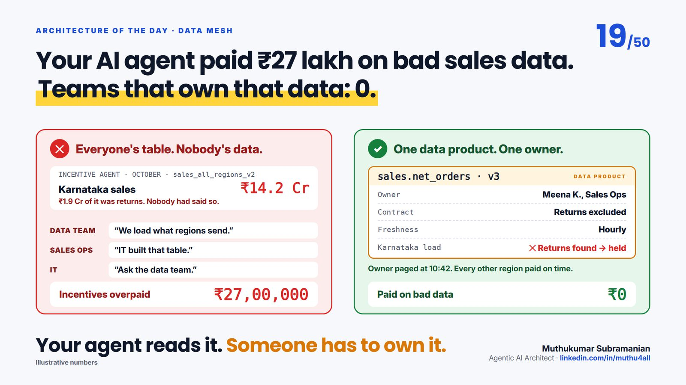

Your AI Agent Paid ₹27 Lakh on Bad Sales Data. Which Team Owns the Mistake?
By Muthukumar Subramanian · Agentic AI Architect

The first week of November. A Chennai company that sells fans and mixer grinders across the south runs its new incentive agent for October, the Diwali month. The agent reads the sales data, works out each rep's payout and sends the file to payroll.
Karnataka looks spectacular. ₹14.2 crore in sales.
Two weeks later, finance notices that ₹1.9 crore of that was returns. The Karnataka team loads gross sales into the shared sales table and books returns separately. Every other region loads net. The agent had no way to know. ₹27 lakh in incentives went out on sales that came back. (The company and every number here are illustrative. The pattern isn't.)
Then the meeting. The central data team says, "We load what the regions send." Karnataka sales ops says, "IT built that table." IT says, "Ask the data team."
Three teams. One table. Zero owners.
The architecture today
Most companies still run data the way they did in 2010. Every department sends its data to one central team. That team loads it into a warehouse or a lake, in tables named things like sales_all_regions_v2. Everyone reads from there.
The central team knows SQL. It doesn't know that Karnataka books returns differently, or that a "sale" in the dealer channel means something else in e-commerce. The people who do know that sit in sales ops and never see the table.
That gap was survivable when a person read the report. An analyst in Bengaluru would look at Karnataka's number and say, "That's too high." An agent doesn't say that. It pays.
Where AI plugs in now: give every dataset an owner before you give it an agent
Data mesh is an idea Zhamak Dehghani laid out at Thoughtworks in 2019. It has four principles: domains own their data, data is treated as a product, a self-serve platform makes that easy, and governance is shared rather than central. It was hard to justify for dashboards. Agents make it urgent.
Here's the practical version for an agent:
→ Each domain publishes a data product. Sales ops owns sales.net_orders. Finance owns finance.receivables. Inventory owns stock.on_hand. Not tables: products, with a version number.
→ Each product has a contract. What's in, what's out ("returns excluded"), the columns and types, how fresh it is, which checks it must pass.
→ Each product has a named owner. A person, not a team mailbox. If the contract breaks, that person gets the call.
→ Agents call products, not tables. The data product is exposed as a tool, often through an MCP server, with the same permissions a person would have. The agent never wanders into sales_all_regions_v2 again.
→ A failed check blocks the agent. If Karnataka's load still has returns in it, the product fails its contract, the agent gets "not available", and the owner is paged.
👉 [IMAGE: A-day19-2-in-article-architecture.png]
Caption: Each domain owns a data product with a contract and a named owner. Agents call products through a catalog, never raw tables. Grey is what you already have. Amber is new.
This isn't the same as Day 11's semantic layer. That was about defining "revenue" once. This is about who stands behind the data underneath it, region by region, when it goes wrong.
Where it's heading with agents
In two or three years, I expect agents to be the biggest consumers of company data, ahead of dashboards. An incentive agent, a replenishment agent, a collections agent and the CFO's assistant, all asking the sales domain every hour.
At that point a data product starts to look like an API product. It'll have a catalog page, a contract file in version control, an uptime promise and a usage bill: which agents called it, how often, and what they decided with it. The tooling is heading there already. Databricks offers managed MCP servers governed by Unity Catalog permissions. Snowflake's Horizon Catalog has an internal marketplace for sharing governed data products. Collibra has an MCP server that lets agents read data contracts. And the Open Data Contract Standard, a Linux Foundation project, is trying to give contracts one common format.
I'm honestly not sure which of these will become the standard. I am sure that "which team owns this table?" will become a question you must answer before an agent may read it.
👉 [IMAGE: A-day19-3-in-article-product-card.png]
Caption: The data product card. Seven fields to fill in before any agent is allowed to call it. Screenshot it for your next data review.
Watch it work
One agent request, three domain data products. One of them fails its contract.
👉 [GIF: A-day19-4-in-article-contract-check.gif]
Caption: Inventory and finance pass. Sales fails its "returns excluded" check, so the agent is blocked and the owner is paged, before any money moves. All figures illustrative.
Pros
→ Every number an agent uses has a person behind it, so the blame meeting becomes a five-minute call
→ The people who understand the data now control its quality, instead of a central team guessing
→ Agents get clean, versioned tools instead of hundreds of tables, which also makes their answers easier to audit
Cons
→ It's an organisation change before it's a technology change, and sales ops didn't ask for a new job
→ Domains drift apart. Five teams with five definitions of "customer" is a mess of a different kind
→ Smaller companies may not have enough people to own a product per domain. For them, start with the one domain that feeds an agent that moves money
The hard part
It's getting sales ops to say yes. Owning a data product means being woken up when the check fails. Nobody volunteers for that. It has to be written into someone's role, with time and credit for doing it.
That's where the new roles come in. A data product owner in each domain is the business person who signs the contract. A Context Engineer, the person who decides what an agent may read and how, wires those products into the agent's tools. And a forward deployed engineer (FDE), an engineer who works inside the customer's team and ships on their real systems, is usually the one who discovers, in week one, that Karnataka books returns differently. These titles are still settling. The Karnataka problem isn't.
The opportunity
Every company putting agents on top of its data has inherited tables nobody owns. They'll pay to fix that before the next payout goes wrong.
That's the market: data products packaged as agent tools. Pick the five datasets your agents touch most. Find a business owner for each. Write the contract, add the checks, publish it through a catalog with an MCP endpoint, and retire the raw-table access. Then run it as a service, with one monthly report to the CFO: which agents used which products, how many checks failed, and how much money those failures would have moved.
In India, start with distributors, NBFCs and retailers with many regions or branches. Every region does things slightly differently, and every one of them is about to be read by an agent.
Tools to try
Databricks Unity Catalog with its managed MCP servers · Snowflake Horizon Catalog and its internal marketplace · dbt model contracts to enforce columns and types · Collibra or Atlan to catalogue products and their owners · the Open Data Contract Standard for a vendor-neutral contract file · any model behind the agent: Claude, GPT, Gemini or an open model.
Your turn 👇
When an agent pays out on bad data, who owns the mistake: the data team or the business team? Pick one.
Tag the person in your company who'd get the call if your sales numbers were wrong.
Day 19 of 50 · follow along. Tomorrow: Day 20 · Your AI Agent Approved Loans on a Stale Credit Score. Who Pays for the Bad Debt?